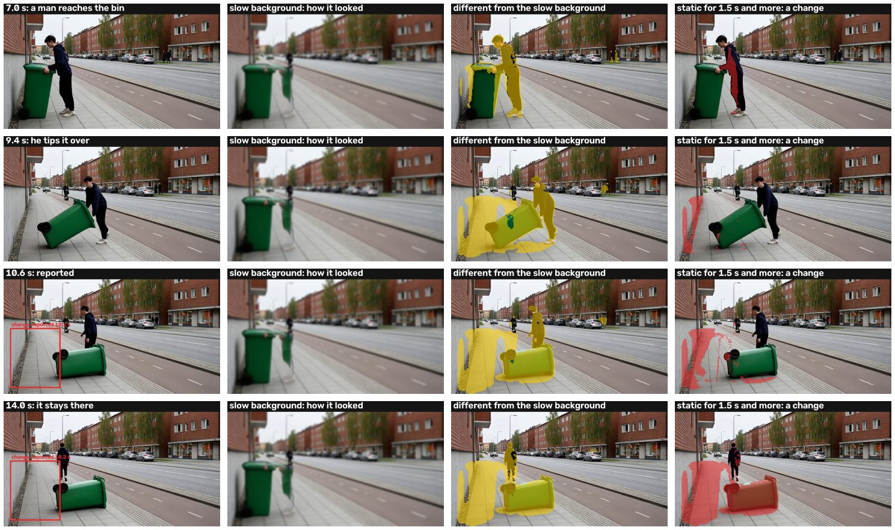
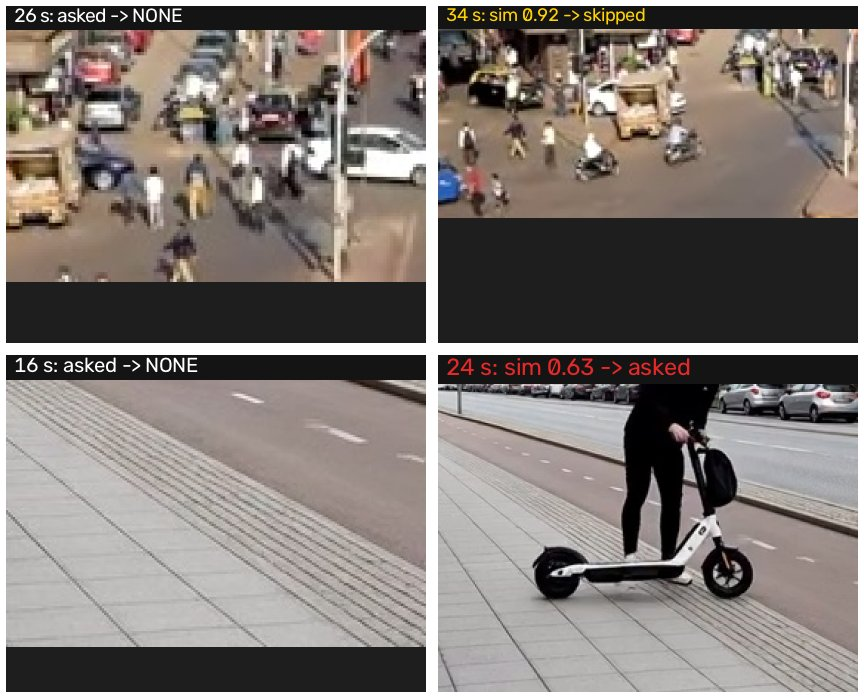
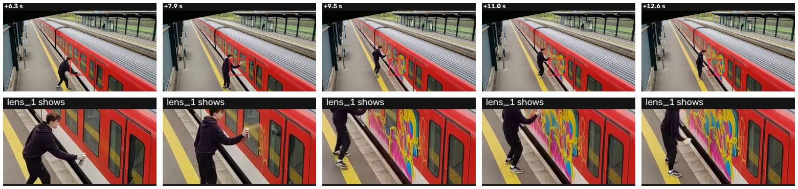

Something arrived and stoppedA dual-rate background notices what stayed changed; people standing in it are held back until they leave; fog and light are not objects.

A memory of verdictsWhat Hafnia or the operator already judged at a spot is not asked again; pieces and recurrences join one incident.

The lensA small spot is cropped and enlarged on a camera of our own, so Hafnia sees it large; a large spot is asked about on its own recording.